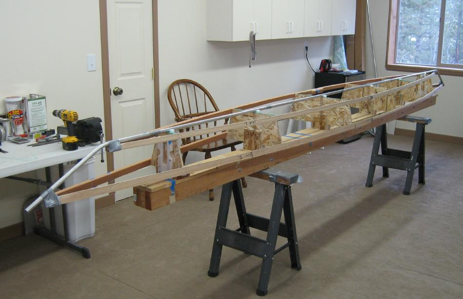

| Sonnet (Skinning Frame) | Menu Previous Page Next Page |
|

The wood skinning frame is used to define the hull shape and to allow the sponson sleeves to be glued accurately to the inside of the skin. The skinning frame is not part of the completed boat , but can be used to skin future versions of this design. The aluminum keel and stems are part of the finished Sonnet inflatable. Details of the skinning frame can be seen on the next several pages. Instructions for making the "Strongback" are available in the Folding Kayak Builders Manual. Use the {Back} key to return.
|
|